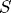
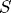
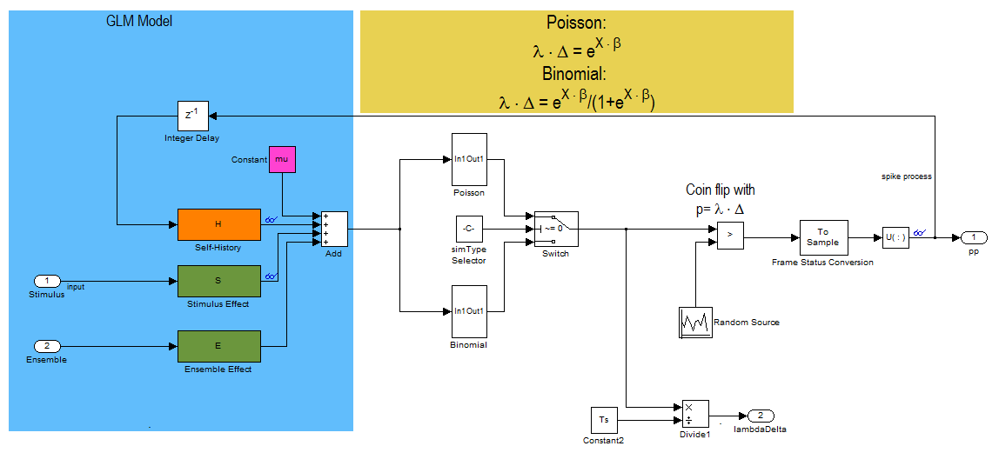
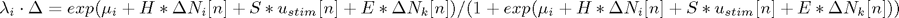
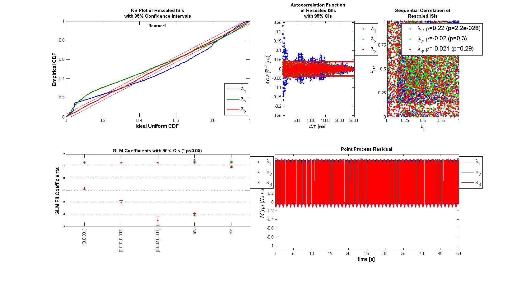
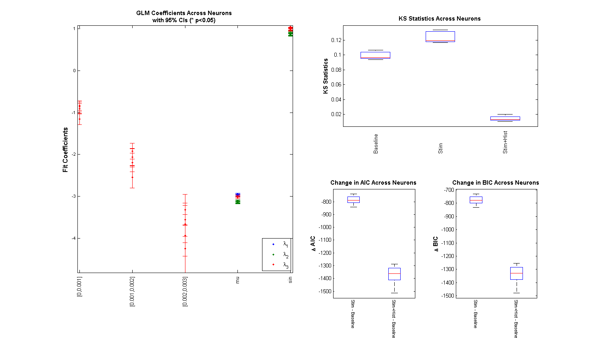

General Point Process Simulation
In this demo, we show how sample-paths of a point process (PP) can be generated from specification of its conditional intensity function (CIF). We then use the generated PP data to validate the outputs of the Neural Spike Analysis Toolbox.
Contents
Point Process Sample Path Generation
That both the stimulus effect and ensemble effects can be made into multi-input/multi-output transfer functions to account for more than 1 stimulus effect or multiple neighboring neuron effects. To do this, simply define  or  to be a row vector of LTI transfer functions. Make sure than the number of dimensions of the input matches the number of transfer functions specified in the row vector.
or  to be a row vector of LTI transfer functions. Make sure than the number of dimensions of the input matches the number of transfer functions specified in the row vector.

This block diagram specifies a conditional intensity function of the form

close all; Ts=.001; %Sample Time tMin=0; tMax=50; %Simulation duration t=tMin:Ts:tMax; mu=-3; %Baseline firing rate of the neurons being modeled
History Effect
![$$1*h[n]=-1*\Delta N[n-1]-2*\Delta N[n-2] -4*\Delta N[n-3]$$](PPSimExample_eq58538.png)
H=tf([-1 -2 -4],[1],Ts,'Variable','z^-1');
Stimulus Effect
![$$1*s[n]=1*u_{stim}[n]$$](PPSimExample_eq93975.png)
S=tf([1],1,Ts,'Variable','z^-1');
Ensemble Effect
![$$1*e[n]=0*\Delta N_{k}[n]$$](PPSimExample_eq43772.png)
E=tf([0],1,Ts,'Variable','z^-1');
f=1; %Stimulus frequency u = sin(2*pi*f*t)'; %Make this neuron modulated by a sine wave e = zeros(length(t),1); %No Ensemble input stim=Covariate(t',u,'Stimulus','time','s','Voltage',{'sin'}); ens =Covariate(t',e,'Ensemble','time','s','Spikes',{'n1'}); numRealizations = 5; %Number of sample paths to generate fitType = 'binomial'; sC=CIF.simulateCIF(mu,H,S,E,stim,ens,numRealizations,fitType); figure; subplot(2,1,1); sC.plot; v=axis; axis([0 tMax/10 v(3) v(4)]); subplot(2,1,2); stim.plot; v=axis; axis([0 tMax/10 v(3) v(4)]);

GLM Model Fitting Setup
In this section, we create the appropriate structures to fit several GLM models to the data generated above.
% Create a constant covariate representing the mean firing rate $$\mu_{i}$ baseline=Covariate(t',ones(length(t),1),'Baseline','time','s','',{'mu'}); spikeColl = sC; %Use the generated data as our collection of spikes cc=CovColl({stim,baseline}); %Use stimulation and baseline as possible covariates trial = Trial(spikeColl,cc); sampleRate = 1/Ts; %Create trial
GLM Model Fitting and Results
clear c; selfHist = [0:0.001:0.003]; %We know the history effect goes back 3 lag orders
Fit only a mean firing rate
c{1} = TrialConfig({{'Baseline','mu'}},sampleRate,[],[]);
c{1}.setName('Baseline');
Fit a mean firing rate + the stimulus term
c{2} = TrialConfig({{'Baseline','mu'},{'Stimulus','sin'}},sampleRate,[],[]);
c{2}.setName('Stim');
Fit a mean firing rate, self-history, and stimulus --- Same as true model
c{3} = TrialConfig({{'Baseline','mu'},{'Stimulus','sin'}},sampleRate,selfHist,[]);
c{3}.setName('Stim+Hist');
Place all configurations together and run analysis for each neuron
cfgColl= ConfigColl(c); if(strcmp(fitType,'binomial')) Algorithm = 'BNLRCG'; % BNLRCG - faster Truncated, L-2 Regularized, % Binomial Logistic Regression with Conjugate % Gradient Solver by Demba Ba (demba@mit.edu). else Algorithm = 'GLM'; % Standard Matlab GLM (Can be used for binomial or % or Poisson CIFs end results = Analysis.RunAnalysisForAllNeurons(trial,cfgColl,0,Algorithm);
Analyzing Configuration #1: Neuron #1,2,3,4,5 Analyzing Configuration #2: Neuron #1,2,3,4,5 Analyzing Configuration #3: Neuron #1,2,3,4,5
Results for sample neuron
results{1}.plotResults;
 Results for across all sample paths
Summary = FitResSummary(results); Summary.plotSummary;